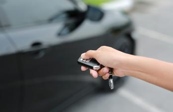

Скільки часу робиться ключ для авто

У середньому ключ для авто робиться за 30 хвилин — 3 години, але є випадки коли треба 5-6 годин. Час залежить від трьох речей: чи є оригінал, тип ключа і марка авто. У цій статті — детальний розклад часу для кожного типу робіт. Будете знати скільки часу планувати на майстерні: чекати на місці чи можна піти у справах.
Хочете дізнатися час для вашого авто?
Зателефонуйте — скажемо точно за моделлю і роком
Швидкі роботи (15-60 хвилин)
- Заміна батарейки в ключі — 2-5 хвилин
- Заміна корпусу ключа — 15-30 хвилин
- Ремонт викидного механізму — 20-40 хвилин
- Нарізання дубліката за оригіналом (механічний) — 15 хвилин
- Клонування чіпа (для авто до 2013) — 15-30 хвилин
- Дублікат звичайного чіп-ключа через OBD — 30-45 хвилин
Середні роботи (1-2 години)
- Дублікат викидного ключа з чіпом — 45-60 хвилин
- Дублікат smart-ключа через OBD — 1-1.5 години
- Програмування ключа BMW CAS1-CAS3 — 1-2 години
- Виготовлення ключа при повній втраті (бюджетні марки) — 1-2 години
- Прив'язка привезеного ключа — 30 хвилин - 2 години
Тривалі роботи (2-5 годин)
- Виготовлення ключа без оригіналу для VAG MQB — 3-5 годин
- Виготовлення ключа BMW CAS4/FEM при повній втраті — 3-4 години
- Виготовлення ключа Mercedes FBS3/FBS4 — 3-5 годин
- Виготовлення ключа Toyota H-chip без оригіналу — 3-5 годин
- Нарізання леза за замком (з розбиранням) — 1-2 години (додатково до програмування)
Детальний час по марках
| Марка / тип | З оригіналом | Без оригіналу |
|---|---|---|
| Renault, Dacia (до 2014) | 45 хв | 1-2 год |
| Hyundai, Kia (до 2014) | 45 хв | 1-2 год |
| VW, Audi, Skoda до 2013 (ID48) | 1 год | 2-3 год |
| VW, Audi, Skoda MQB (Megamos AES) | 1-2 год | 3-5 год |
| BMW EWS / CAS1-CAS3 | 1-2 год | 2-3 год |
| BMW CAS4 / FEM / BDC | 2-3 год | 3-4 год |
| Mercedes-Benz FBS3 | 2 год | 3-5 год |
| Mercedes-Benz FBS4 | 2-3 год | 3-5 год |
| Toyota / Lexus G-chip (до 2014) | 1-2 год | 2-3 год |
| Toyota / Lexus H-chip (DST-AES, з 2014) | 2-3 год | 3-5 год |
| Ford, Mazda (HITAG-Pro) | 1-2 год | 2-3 год |
| Honda, Acura | 1-2 год | 2-3 год |
Чому деякі роботи такі тривалі
Програмування ключа — це не «натиснути кнопку». Особливо коли немає оригіналу. Ось етапи для типового випадку повної втрати на BMW F10:
- Підключення до OBD, діагностика блоку CAS — 10-20 хвилин
- Зчитування дампа CAS4 (іноді — зняття блоку з авто) — 30-60 хвилин
- Обробка дампа для отримання ISN коду — 30 хвилин (часто через онлайн-сервіс)
- Підготовка заготовки ключа (програмування чіпа PCF7945) — 15 хвилин
- Запис нового ключа в CAS, прив'язка до DME — 30 хвилин
- Нарізка леза за замком (якщо немає коду з VIN) — 30-60 хвилин
Разом — 3-4 години для досвідченого майстра. Дилер за ту саму роботу візьме 1-2 нормо-години + чекати замовлення ключа із заводу 1-3 тижні.
Як скоротити час
- Приїздіть з оригінальним ключем — економить 1-3 години
- Назвіть VIN заздалегідь — підготуємо заготовку до вашого приходу
- Заздалегідь домовтеся про час — щоб не чекати у черзі
- Привезіть техпаспорт — без нього не починаємо роботу
- Якщо є кілька ключів — везіть всі, деяким алгоритмам потрібно бачити пару
Часті запитання
Скільки часу робиться дублікат ключа з оригіналу?
Звичайний ключ з простим чіпом — 30-45 хвилин. Викидний ключ — 45-60 хвилин. Smart-key — 1-2 години. Це включає підбір заготовки, фрезерування леза, програмування чіпа і тестування.
Скільки чекати ключ при повній втраті?
Залежить від марки: бюджетні (Renault, Hyundai) — 1-2 години, VAG до 2013 — 2-3 години, VAG MQB — 3-5 годин, BMW CAS4 / Mercedes FBS3-4 — 3-5 годин, Toyota з H-chip — 3-5 годин.
Чи можна зробити ключ за 15 хвилин?
Так — клонування чіпа з оригіналу для старих авто (до 2013) займає 15-30 хвилин. Це найшвидший варіант.
Хочете знати точний час для вашого авто?
Зателефонуйте і назвіть VIN — підкажемо за 2 хвилини